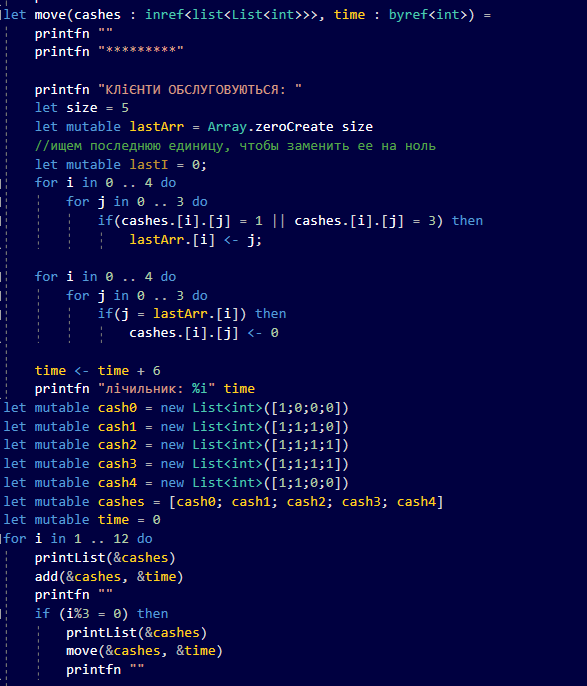

Мета
Опанувати теоретичні основи використання списків функціональними мовами та розробити програми обробки списків
Завдання 1
Завдання 4.1. Задати дату народження у вигляді ДД.ММ.РРРР. Створити список, елементи якого складають квадрат Піфагора, що побудований за датою народження. Значення, які в квадраті Піфагора відсутні, в списку записати нулями.
Вивести створений список. Виконати такі операції:
a) Підрахувати кількість нульових елементів;
b) Знайти елементи, які містять по n (1,2,3,або 4 - задане користувачем) цифр;
c) Сформувати новий список з елементів з найменшою та з найбільшою кількістю цифр.
Хід роботи
Моя дата народження : 2.01.2000
Мій квадрат піфагора зліва-направо, зверху-вниз читається так: 111, 0, 0, 22, 55, 0, 0, 0, 0.
Результати
Завдання 2
Завдання 4.2 Написати код, що моделює процес роботи банку. Банк має 5 кас для обслуговує клієнтів протягом робочого дня (5 годин). Інтервали часу між надходженням клієнтів складають 1 хвилину. Час обслуговування клієнтів 5 хвилин. До кожної каси формується окрема черга. Клієнт, що надійшов на обслуговування, обирає найкоротшу чергу, при цьому, якщо найкоротших черг декілька, то клієнт обирає першу. В зв’язку з тим, що керівництво банку цікавлять поточні витрати та якість послуг, що надаються клієнтам, ставиться питання про можливість зменшення кількості кас. Вивести на екран сценарій роботи кас банку та кількість кас, які залишаться в банку.
Код програми

Результати
Як бачимо, вже після того, як лічильник стає 28, в кожній касі стає 2, або більше вільних місць, тому є доцільним для керівників банку, прибрати одну з них.
Висновки:
Отже, в результаті виконання лабораторної роботи було написано процедури, що створюють список, модифікують його, здійснюють пошук та упорядкування значень, а також написано процедури, що моделюють бізнес-процеси в компаніях та за допомогою різних сервісів.
Було змодельовано бізнес-процес в банку, проаналізувавши який, було вирішено, що мати 5 працюючих кас, не є доцільним, адже вистачатиме й 4 з них.